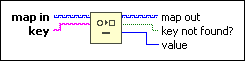
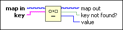

Remove From Map Function
Owning Palette: Map VIs and Functions
Requires: Base Development System
Removes a key and its associated value from a map.

 Add to the block diagram Add to the block diagram |
 Find on the palette Find on the palette |
Owning Palette: Map VIs and Functions
Requires: Base Development System
Removes a key and its associated value from a map.

| Add to the block diagram |
Find on the palette |
Refer to the Map Collection - Word Counting VI in the labview\examples\Collections directory for an example of using the Remove From Map function.
 Open example Find related examples
Open example Find related examples